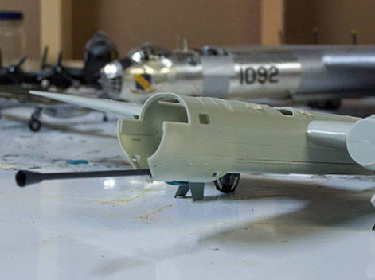

{kind=link}

{kind=link}
{kind=link}
You may click on the small images above to view larger pictures
Revell-Monogram 1/72 He-177 �Greif�
Kit #04616
MSRP $18.95
Images and text Copyright � 2005 by Mike Glinski
History
When Germany invaded Russia, Hitler once again thought he would achieve a quick victory. However, the Russian Army proved much harder to crack than anticipated. Once again the Germans were faced with a long struggle with more or less even odds.
Russian tanks proved especially hard to contend with. They could fight toe-to-toe with the Germany panzers on the ground, and were nearly impossible to knock out with bombs from the air. Nothing but a direct bomb hit could take one out -- a tall order even in the best of circumstances, much less during heated aerial combat. The Germans were forced to improvise.
The most widely known example of the German solution is the Ju-87 G-1. A �Stuka� was fitted with two anti-tank cannons in two under wing pods. The result was surprisingly effective. This led to the thought that a larger cannon would prove even more effective. But a larger cannon would require a larger airframe, and at the time, the largest available airframe was the He 177.
The He-177 �Greif� (Griffon) was Germany�s only foray into the realm of large bomber. The program was plagued by difficulties, most stemming from the fact that, to reduce drag, four engines were condensed down to two by connecting two engine blocks to the same crankshaft. This streamlined things by only offering the drag of two engine nacelles while retaining the same power as four engines, but this also gave the He 177 the nasty tendency to burst into flame during normal cruising flight. Unfortunately, it was all Germany had.
Five He-177A-3s were pulled from active duty and fitted with enormous 75mm anti-tank cannons in the ventral gondola. These were then re-classified He-177A-3/R5s. Visually, it was very impressive. In practice, however, it was found that not only was the cannon almost impossible to aim, every time it was fired the recoil nearly shook the aircraft to pieces. Additionally the simple act of installation affected flight characteristics adversely. Soon all five examples were re-converted back to standard He-177A-3 bombers.
The Idea
Ever the fan of the obscure and oddball, I actually saw this idea as a line drawing in a book. As soon as I did I was drawn to the possibility of building it. Not only was the model visually impressive (A large bomber with a gigantic cannon sticking out of the front), a conversion wouldn�t be that difficult. Revell of Germany had just come out with their new 1/72 He-177A5, and from what I could see the He-177A3 airframe didn�t look that different from the kit offering, at least on the outside. All it would require was either a scratch built 75mm anti-tank cannon, or one salvaged from another kit.
Still, it was a long time before I got the chance to execute my idea. But finally the opportunity arose to get a He-177 kit for cheap, and I went for it.
The Kit
The kit is a typical new-mold Revell of Germany offering- parts are crisply molded, with wonderful surface detail and little flash. I only found a little on the lower half of the manned turret, which was easily cleaned up.
The parts count is rather high. A detailed interior is provided throughout, the cockpit and tail sections being rather exceptional. The cockpit alone consists of over 20 pieces. A number of antennas, aileron hinges, and many other fiddly bits are a welcome addition. A very convincing model can be completed right out of the box. (A number of detail sets have recently come out that just add to this model. I didn�t use any for this build, but if you do, you can turn this kit into a truly stunning aircraft.) (Editor�s note; The two small sprues in the lower right corner are not related to the He-177 kit.) My only gripe with the kit is the clear canopy -- it is thick and nearly opaque. It�s a shame, really. It hides all the wonderful cockpit detail. My recommendation would be to go with a vacuform canopy right off the bat.
One last item worthy of mention are the beautiful Fritz X bombs provided as external armament. They are the best examples I have ever seen, even outshining Condor�s offering (and Condor�s are half photo etch!). It was almost physically painful not being able to use them on this project. They wouldn�t have been fitted to a ground attack aircraft. Reluctantly, I set them aside, and began to tackle the kit proper.
The Cockpit
Kit construction began where 95% of aircraft kits begin -- in the cockpit. The large number of cockpit pieces were painted RLM 66 while still on the sprue. Details were accentuated with a wash and dry brush of black and silver, respectively. Seatbelts were simply painted with white tinted with a bit of leather. Buckles were painted silver.
Once all the parts were painted, I began to assemble them. This is where I ran into the only trouble I had with this kit. It may have been because the paint was a little too thick, but for some reason the parts didn�t fit together as well as they should. Whatever the case, the cockpit became a game of �fitting too much into too little space�. It was a shame, really, because all the detail provided is welcome. Unfortunately, my poor construction of it would plague me for the rest of the build.
A number of details (instrument panels, control yolks, and rudder pedals) were left off. Because of their location, they could be easily added after painting, and were too delicate to risk breaking off during the painting process. So these were set aside for now.
Four windows in the gondola were to be painted over, due to the installation of the cannon. These were unceremoniously super-glued in with little regard to fogging. You wouldn�t be able to see it, anyway.
The tail gunner�s section is also well detailed, but consists of quite a few less pieces than the cockpit. This went together without any trouble.
Once all the interior details were painted and installed I closed up the fuselage. This is where my less than stellar cockpit construction began to haunt me. The back half went together perfectly. When I got to cockpit, however, it wouldn�t go together. I ended up with a 1mm gap in the bottom of the gondola. This I attempted to fix with a bit of superglue and some tape to hold the joint together, which worked okay. Unfortunately this would again come back to haunt me when I attempted to attach the canopy.
The bomb bay was another beautifully detailed piece I was forced to cover up. A large amount of molded-in detail is incorporated here, and a full set of bombs is included (even though only a third of the bomb bay is molded with doors you can open up). However, because bombs would not be incorporated into a ground attack Greif, once again this piece was covered up and installed into the bottom of the fuselage.
Wings and tail surfaces were assembled and attached without incident, as per the kit instructions. All the �Flush� details (those that didn�t stick out of the fuselage too far) were added. Finally, it was time to fit my He-177 with its cannon.
75 mm Anti-Tank Cannon
When I first started thinking about doing the project I debated what to use for the cannon. For a while I played around with the idea of using a 1/72 PAK 40 German anti-tank gun. In the end, however, I found I could easily scratch build a 75mm cannon for much less money using a wire coat hanger and a small home-made vacuform muzzle break.

The muzzle break was easy enough. I simply heated a piece of stock styrene sheet over a candle. When the piece started to sag I quickly pulled it over the end of a mechanical pencil. This gave me a simple conical shape which I then cut out and sanded to its final shape. This was then glued onto the end of a length of wire coat hanger. All the dimensions of the cannon were simply eyeballed, using the line drawing as a guide.
A hole was drilled into the clear front section of the aircraft gondola to accept the other end of the wire �cannon�. A final, perfect fit was achieved by heating the wire coat hanger and positioning it inside the aircraft while still hot. It melted the plastic as I moved it around and lined it up. Once the cannon was where I wanted it, the plastic hardened, preserving the exact location. The cannon was then removed, slathered in superglue, reinserted back into the airframe, and checked once again for alignment.
At this point all gaps were filled with putty and sanded, and the airframe was prepped for a primer coat.
Paint
The first step when painting anything is research. Because this was example of the He-177 was altered from the kit offering, a paint scheme offered in the instructions could obviously not be used. All of those were Atlantic anti-shipping variants, while I chose to portray an example in service on the Eastern front. So, it was off to the internet.
After looking at several different (and rather interesting) schemes, I finally settled on the most likely one -- a factory-applied camouflage of RLM 70/71 splinter with RLM 65 undersides, all over sprayed with a flat white field applied winter camouflage. This white was not only water based, and thus weathered quickly, application of it became increasingly sloppy and frugal as the War progressed. These properties would lead to a visually interesting model.
Because I planned to use acrylics, a primer coat was a must. I masked off all clear parts, and temporarily glued the clear nose cone (covered in liquid mask) on the front to mask the interior. Other windows and openings were masked with a combination of masking tape, liquid mask, tissue paper, or earplugs. A primer coat was then applied with a spray can. Once that was dry all the small details (aileron hinges and mass-balances, rudder hinges, antennas, etc.) were added. Landing gear was left off for now. It was then time to break out the airbrush and start the actual painting.
The first color to be laid down was the underside RLM 65.
This was laid down on the underside of everything and brought up the sides a bit, just to ensure no primer coat would be visible after I applied the upper surface camouflage. Once that was dry I started on the upper surfaces. This is where I was able to fudge a little bit. Because the white I would paint later would cover the camouflage rather completely, I realized I didn�t need to spend a large amount of time masking off actual demarcation lines. In fact, I didn�t need to use a second color at all. The upper surfaces were simply covered with a coat of RLM 71, and I was careful not to get it too far into the RLM 65 on the bottom. While not historically accurate, the same result is achieved, with less of a hit to your pocketbook!
The final step in painting was the application of the flat white. In order to replicate the field applied look of the white, I didn�t open my airbrush up wide and lay down a solid color. In fact, I dialed the nozzle down and painted the white exactly the same way it would have been applied in the field. I didn�t worry about being too precise- field applied camouflage was rather random. The final result turned out to be somewhere between a solid color and the classic Luftwaffe �scribble�, exactly as I intended it. I was careful to paint enough of the white to hide the RLM 71/65 demarcation line.
As soon as I was happy with my paint job, I coated everything with a gloss coat of Future floor wax in preparation for decaling.
Decals
Experience has told me that decals from Revell Germany offerings are generally well printed, are opaque, and go down easily. The only problem I have found with them is that they don�t really like to stay down (This can easily be solved with a proper clear coat to seal them.). Looking at the decals provided for the He-177, I wasn�t disappointed. Markings two aircraft are provided, along with a whole slew of placards, warnings, and wing-walk lines.
Admittedly, the decaling process is where I broke with accuracy a bit. Both decaling options are for Atlantic-based anti-shipping He-177s, not Eastern-based ground attack He-177s. But I honestly had no idea what He-177 squadrons operated off the Eastern front, and even if I did, I don�t have enough decals in my spares box yet to scrape one up. Besides, 9 out of 10 people wouldn�t know the difference if I simply used kit decals anyway. So, I simply used the markings provided for the more colorful He-177 and hoped no one would notice.
The only other snag in the otherwise uneventful decaling process was the application of the wing-walk stripes. Somehow a number or two got mixed up between the instruction booklet and the decal sheet, and I ended up short a few decals of the correct length. Thankfully a few were left over on the sheet, and I was able to fit enough together to fill in the gaps. Looking back now, I realize that I probably should have applied the wing walk decals before painting the field-applied white, but it�s obviously too late now. ;)
The final step before finishing was to paint the 75mm cannon barrel Gunship Gray and coat the entire model in Clear Flat. All the masking tape was removed, and the nose canopy was removed and stripped of its liquid mask. I was now ready to add the finishing touches.
Landing Gear
The most obvious thing I had left off until now was the landing gear. The landing gear on the original was an ingenious compromise, designed to get increased height so the prop would clear the ground, but still fit in the wing without the aid of an engine nacelles. The solution was to split each two-wheel main carriage in half, each half retracting opposite ways into the wing. The kit replicates this well, with each gear leg consisting of six separate pieces, including the wheels. The main strut is molded in a single large piece, though, so the landing gear is easily strong enough to support the weight of the finished model.
Construction began with the painting of each piece while still on the sprue. All of the struts were painted RLM 02, while the tires were painted Flat Black with Gunship Gray used for the hubs. These then received a wash of thinned flat black. For my first serious use of a wash, the results were surprisingly good.
All four struts were then assembled. The wheel attachment is a bit different then I�ve seen before. The inner half of each wheel is attached to the strut, and a plastic �nut� is used to secure it while still allowing it to rotate. This assembly is then hidden by the other half of the main wheel. This arrangement is more often seen with props then wheels, but the end result is the same.
All four main carriage assemblies were then attached to the airframe with superglue. Lining up all four and getting them to all sit on the ground at once was a pain. You have four separate sub-assemblies to move and line up, all while ensuring the airframe sits level. My finished result left a bit to be desired, with a wheel not making contact with the ground and the wings sitting a bit tilted to one side. It can only be seen if you look really closely, though.
The strut actuators were added last. These are necessary to prevent the main struts from splaying out too much. My tank-busting He-177 was finally on its own legs. All turrets and clear parts (minus the front canopy) were added at this point. There was just one more thing to go- the canopy.
The Canopy
The final step of this project was the installation of final cockpit details and canopy. This step, as simple as it sounds, turned out to be the one that gave me nightmares for quite a while afterward.
I began to notice problems when the final cockpit bits were put into place. Once again, this became a game of cramming too much into too little space. I was able to get it all in, but things weren�t lined up as well as they could have been. Then came the worst part of all -- installing the canopy.
Remember how I said cramming everything up front must have deformed the nose? Well, this is where it came back to put me in a world of hurt. First off, all those little bits up front sticking out prevented the canopy from sitting where it was supposed to. These were taken care of, in the rather barbaric fashion of heating a wire coat hanger and melting off the offending parts. The canopy still wouldn�t fit correctly, due to aforementioned reasons, and wouldn�t fit, no matter what I did. So, I did the best I could with, you guessed it, superglue. The results were just as you would expect: A nice, crooked, opaque, fogged canopy.
Knowing the canopy (sadly) couldn�t get any better, I decided to make do with what I had. The large gaps around the canopy were filled with white glue, and the canopy frames were hand painted on, using a toothpick (a process that went much smoother then attaching the canopy to the fuselage). Then, a rather drastic option was employed to get rid of some of the fogging. A small bit of Future was actually poured into the (completed!) cockpit, and swirled around the inside of the canopy. This helped clear the fogging a little bit, but now I have a shiny cockpit! The �good� news is that the canopy is still too opaque to tell. The other good news is that this unique He-177 was finally finished!
You may click on the small images above to view larger pictures
Conclusion
What began as a simple conversion turned into something of a nightmare due to me ignoring the cardinal rule of modeling- keep superglue and clear parts FAR away from each other! The result overall, though, is not bad. This is the only kit (I know about) of this unique development of the He-177, and apart from the canopy, I must say I�m pleased with how it came out. I learned a number of new skills and improved upon a number of old ones and I�m sure these skills will come in handy for future projects. Despite the problems, I can say I will probably get another one of these kits, along with an aftermarket vacuform canopy!
Epilogue
After these pictures were taken I added a number of details, and I still have a few things I need to add to the model. Radio wires were added with stretched sprue, and eventually I will need to add some aftermarket swastikas.
Finally, I�d like to thank Mr. Swan for offering to host this review on his website. Without him, I would have no way to show off my wacky creations to the rest of the modeling community. And thank you for reading this review all the way through!
8/12/06
I�ve altered this model slightly since I �completed� it back in 2005. Looking back at more research material once my He 177 was finished, I realized I had made a mistake when I painted it. Apparently, when the field applied white camouflage was painted; the canopies were masked off, leaving a white aircraft with (usually) green canopy frames. Well, this error was easily corrected on my model with some RLM 71 acrylic applied with a toothpick. In addition, I added some stretched sprue radio antennas. I think that this model is finally finished. But then again, you never know�
You may click on the small images above to view larger pictures


{kind=link}
{kind=link}
{kind=link}